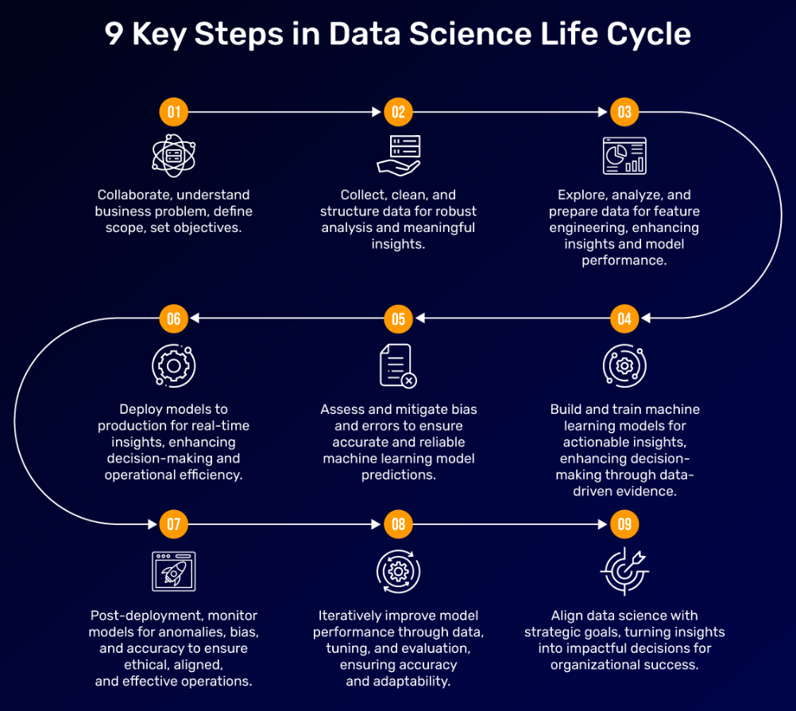
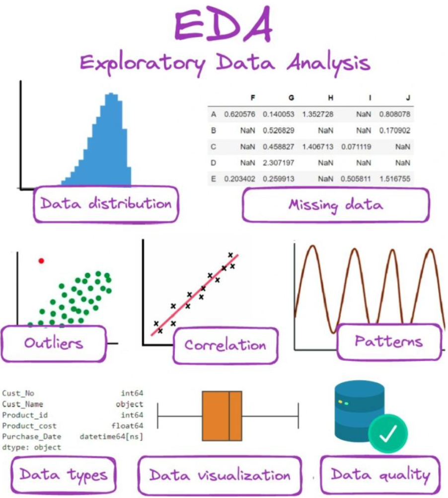

Gourab Guha
Thank you for taking the time out to visit my website. I am an accountable, results-driven, commercially focused, and diligent project manager with a track record of achievement. My skills, knowledge, and experience are a strong match for the job description, and my excellent time management capabilities, interpersonal skills, and negotiation techniques make me an ideal candidate for your organization's strategic goals.
Notable achievements in my career include:
As a seasoned project manager with expertise in managing various projects and handling the full life cycle of a Web development project, I am well-equipped to start a new project with a structured approach. The guidelines outline my approach to managing a new project, applying the right framework, monitoring and optimizing various stages, and delivering proven results.

-: My approach to traditional Projects :-
Step 1: Planning and Goal Setting
The first step in managing a new project is to plan and set clear goals. This involves identifying the project’s objectives, scope, timeline, budget, and stakeholders. I ensure that all stakeholders are aligned and informed about the project’s goals and expectations. This step is crucial in setting the foundation for the project’s success.
Step 2: Methodology Selection
The next step is to select the appropriate project management methodology. For data science projects, I typically use Agile, as it allows for flexibility and adaptability in the face of uncertainty. Agile’s iterative approach enables the team to respond quickly to changes in the project’s requirements and deliver working software in short cycles. For Web development projects, I may use Waterfall, as it provides a structured approach and ensures that each phase is completed before moving on to the next one.
Step 3: Team Building and Resource Allocation
Once the methodology is selected, I focus on building a strong team with the right skills and expertise. This involves identifying the necessary resources, including personnel, equipment, and software. I ensure that each team member understands their role and responsibilities and that they are equipped to deliver their tasks effectively.
Step 4: Project Execution
With the team in place, I focus on executing the project plan. This involves breaking down the project into smaller tasks, creating a schedule, and assigning resources to each task. I monitor the project’s progress regularly, identifying and addressing any issues or roadblocks that may arise.
Step 5: Monitoring and Control
Throughout the project, I continuously monitor and control its progress. This involves tracking key performance indicators (KPIs), such as project schedule, budget, and quality. I also ensure that the team is following the agreed-upon methodology and that any deviations are addressed promptly.
Step 6: Quality Assurance
Quality assurance is a critical aspect of project management. I ensure that the project deliverables meet the required standards and that the team is following best practices in software development. This involves conducting regular code reviews, testing, and quality assurance activities.
Step 7: Project Closure
Once the project is complete, I focus on closing it out effectively. This involves documenting the project’s outcomes, conducting a post-project review, and ensuring that all stakeholders are satisfied with the results. I also ensure that the project’s lessons learned are documented and applied to future projects.

As the software development process progresses, the cost to repair bugs increases significantly. Initially, when bugs are caught and addressed early in the development cycle, the time and effort required for fixing them are relatively low. However, as the project moves into later stages, especially in the traditional Waterfall model, the identification of bugs becomes more costly.
Here's a breakdown of why this happens:
-
Detection Time: In the early stages of development, including the iterative cycles of Agile, bugs are typically easier to identify and resolve since the codebase is smaller and less complex. However, as the software grows more intricate, detecting and isolating bugs becomes more time-consuming and requires more extensive testing.
-
Integration Complexity: As the project advances, integrating new code with existing code becomes more challenging. This complexity can lead to unforeseen interactions between different components, causing previously undetected bugs to emerge.
-
Rework and Revisions: Late-stage bug fixes may necessitate significant rework of existing functionality, requiring extensive testing and quality assurance to ensure that the fixes do not introduce further issues.
-
Client Impact: Bugs discovered later in the development process can have a more significant impact on client satisfaction, as they might delay the delivery of the final product and erode confidence in the software's quality. This could lead to additional costs related to customer support, reputation management, and potential loss of business.
In an Agile environment, where feedback and testing occur continuously throughout the development process, the cost of fixing bugs may still increase as the project progresses, but the likelihood of identifying major issues earlier minimizes the overall impact. However, in the Waterfall model, where testing typically occurs toward the end of the process, the cost of bug repair escalates substantially as the potential for rework and project delays rises.
Some popular project management framework types available to project managers to choose from include:
-
Traditional Waterfall Methodology
As one of the more traditional frameworks, Waterfall works sequentially from the project planning phase down to the project execution phase, where there is a project workflow. In project management, Waterfall and Agile are two of the most popular software project management frameworks used to manage software development teams..

The traditional waterfall method
-
Agile - Scrum Methodology

Reasons for choosing Agile
Agile project management works best for projects prioritizing speed and flexibility as it relies on short delivery project cycles.The agile framework is one of the most popular project management frameworks used by business owners, software developers, teams, and project managers. Some benefits of using the agile framework for your projects include superior product quality, higher customer satisfaction, and better-quality control.
This agile project management framework is best used for complex projects like software development. With the Scrum framework, tasks are broken down into sprints for better accountability and teamwork. You can use Scrum boards to visualize your project management process and track your project progress.

The Agile Scrum framework
I would say that I prefer Agile because it allows me to quickly adapt to changing requirements and make frequent, small, incremental improvements. It also prioritizes collaboration and communication between team members, which helps me feel more connected and engaged in the development process.

Agile Vs Waterfall
-
Lean Methodology
The lean project management framework initially designed for the Toyota production system focuses on optimizing project processes, continuous improvement, and resource management.
Lean methodology for software development is an effective and efficient approach that focuses on delivering only the most valuable features to customers by reducing waste, prioritizing customer satisfaction and encouraging continuous improvement.

Reasons for choosing Lean
-
Critical Path Method (CPM)
The critical path method offers a step-by-step guide used by project managers to plan project processes by defining tasks according to how crucial they are to deliver on the project objectives. This method determines the longest series of linked tasks in a project. When these tasks are finished promptly, the project can be concluded as soon as possible. It also pinpoints tasks that can run concurrently with critical tasks, allowing for additional time flexibility. By focusing on tasks without extra time and managing other tasks accordingly, project managers can effectively ensure projects move forward towards timely completion.

The critical path method
-
Kanban Framework
Kanban teams use a Kanban board to visualize and optimize their workflow. Physical boards are common, but virtual boards are essential for agile software development because they enable traceability, collaboration, and remote access. Whether a team uses a digital or physical Kanban board, it helps them visualize their work, standardize their workflow, and quickly identify and resolve blockers and dependencies.
A basic Kanban board has three columns: To Do, In Progress, and Done. Teams can customize the workflow to fit their specific processes based on factors like team size, structure, and objectives. The Kanban methodology relies on complete transparency of work and real-time communication. The Kanban board serves as the single source of truth for the team's work..

The kanban board
-
SUSTAINABLE PROJECT MANAGEMENT FRAMEWORK
The Sustainable Project Management framework focuses on integrating sustainability principles into project management practices. It essentially aligns with the triple bottom line of people, planet, and profit to ensure that projects not only generate financial value but also contribute positively to the environment and society.

A conceptual framework of sustainable project management This includes:
Environmental Responsibility: In Sustainable Project Management, environmental considerations are integrated into project planning and execution. This involves assessing the environmental impact of the project, optimizing resource usage, and adopting eco-friendly practices to minimize ecological footprints.
Social Impact: The framework emphasizes the social aspects of project management, considering the well-being of communities, stakeholders, and employees affected by the project. It involves promoting diversity and inclusivity, supporting local economies, and engaging with stakeholders to ensure that the project has a positive social impact.
Economic Viability: While focusing on sustainability, the framework also addresses economic sustainability by ensuring that projects are financially viable and contribute to long-term economic development. This involves prudent resource allocation, cost-effective solutions, and the creation of value for stakeholders and society.
Risk Management: Sustainable Project Management integrates risk management practices that account for sustainability-related risks such as regulatory changes, environmental impacts, and social unrest. It involves proactive risk identification and mitigation strategies to address potential sustainability challenges.
Stakeholder Engagement: Engaging stakeholders is a critical aspect of Sustainable Project Management, as it involves fostering open communication, transparency, and collaboration with all parties involved. This ensures that diverse perspectives are considered, and the project aligns with the expectations and needs of its stakeholders.
Long-term Planning: The framework encourages long-term thinking by considering the extended impact of the project on the environment, society, and the economy. This involves planning for the project's entire lifecycle, including its operational phase and eventual decommissioning or transformation.
Continuous Improvement: Sustainable Project Management promotes a culture of continuous improvement, where projects are evaluated not only based on short-term outcomes but also on their long-term sustainability impact. It involves learning from past projects and implementing best practices to enhance future sustainability performance.
-
Extreme Project Management (XPM)
Extreme programming (XP) focuses on an iterative and incremental approach to project or product development. XPM is the perfect framework for teams handling complex projects in unstable or fast-changing environments. The emphasis of this project management framework is on stakeholder analysis & stakeholder management. Before project initiation, the project manager holds a crucial meeting with stakeholders to discuss project plans and other unexpected situations.

Extreme Programming Project Management
How I Select a Project Management Framework
1. Implementing Practical Approach: The effectiveness of project management frameworks is maximized when a practical approach is employed. Enforcing a framework onto a project would likely contribute to the project’s failure.
2. Understanding and Tailoring: The foremost criterion for a successful project within a project management framework is to comprehend its operations and customize it to suit the specific needs of your organization.
3. Adaptability of Frameworks: Recognizing that no single framework can suffice for all projects is crucial. When deciding on the best framework for your organization, it’s essential to consider the following:
• For organizations in rapidly changing industries, utilizing technology, or providing non-constant products, an adaptable framework like Scrum is recommended.
• A sprint-based framework like Scrum is suitable for intangible projects or those with undefined project deliverables, such as in software development.
• The Waterfall methodology is suitable for well-defined and stable projects, designed to minimize risks.
4. Familiarity and Drawbacks: The choice of framework implementation should primarily depend on the familiarity of your organization and team members. Introducing new frameworks comes with unique drawbacks that should be avoided.
Benefits of Adhering to a Project Management Framework
1. Consistency: Project management frameworks ensure precise and consistent organizational processes, especially during project planning and deadline setting.
2. Clarity: : Each stage of the project process is clearly defined, minimizing confusion for the team regarding tasks and required tools.
3. Optimization: Project managers are provided with a clear understanding of project costs, time, and resource allocation, enabling better planning for future projects.
4. Communication: The framework facilitates effective communication as it provides regular meetings to boost the flow of information.
5. Simplification: Larger projects are broken down into smaller tasks, simplifying task delegation for project managers.
Project management tools used :

Some of the Software development tool used :

Conclusion
In conclusion, my approach to managing a new project involves a structured approach, starting with planning and goal setting, followed by methodology selection, team building, project execution, monitoring and control, quality assurance, and project closure.
As a project manager, I have a proven track record of delivering successful projects on time and within budget. I have a deep understanding of the project management process, and I am skilled at managing all aspects of a project, from planning and execution to risk management and stakeholder communication.
I am confident that I have the skills and experience necessary to be an asset to your team. I am a hard worker, and I am always willing to go the extra mile to get the job done. I am also a team player, and I am skilled at working with people from all different backgrounds.
If you are looking for a project manager who can deliver proven results, I encourage you to contact me today. I would be happy to discuss your project in more detail and explain how I can help you achieve your goals
-: My approach to AI Projects :-Handling an AI project involves several stages, from understanding the problem to deploying and monitoring the model. I need to first thoroughly understand the project scope, timeline, and budget to ensure a successful AI project. It's crucial to involve the right stakeholders, such as data scientists, engineers, and domain experts, in the planning process. Communication and collaboration are key to keep the project on track and address any challenges that may arise. Considering agile methodologies and regular project check-ins to ensure the project is meeting its objectives and delivering value. Additionally, I understand the importance of monitoring and assessing the project's impact to ensure alignment with the business goals.
 Data Science Lifycycle
Here are the details of the steps I follow:
Step 1: Understanding the Problem
Define the Problem Statement: Clearly articulate the problem you’re trying to solve. This includes identifying the specific pain points, goals, and expected outcomes.
Gather Requirements: Collect input from stakeholders and domain experts to understand the requirements of the project. This includes identifying the key performance indicators (KPIs) to measure success.
Conduct Research: Research existing solutions, technologies, and methodologies relevant to your problem. This helps in identifying potential approaches and potential pitfalls.Step 2: Data Collection
Identify Data Sources: Determine the sources of data relevant to your problem. This includes internal data, external data, and potentially new data to be collected. Some of the data collection technique include using software to gather data from online sources automatically. Techniques include web scraping, web crawling, and using APIs. Automation can improve the accuracy of data collection but is limited to secondary data collection and cannot be used for primary data collection.
Data Engineer’s Role: The data engineer is responsible for collecting and preprocessing the data. This involves:
Data Ingestion: Collecting data from various sources using techniques such as web scraping, API integration, or database queries.
Data Cleaning: Ensuring the quality of the data by handling missing values, outliers, and inconsistencies.
Data Transformation: Converting data into a suitable format for analysis. Data transformation is necessary to ensure that the data is in a format that can be used by machine learning algorithms
Data Quality Control: Verify the quality of the collected data by checking for errors, inconsistencies, and missing values.Step 3: Data pre-processing and Exploratory Data Analysis (EDA)
Data pre-processing and EDA in AI projects involves several best practices to ensure that the data is clean, consistent, and suitable for machine learning models.
 exploratory-data-analysis
Here are some of the best practices for data preprocessing in AI projects:
Data Quality Control: Ensure that the data is accurate, complete, and relevant to the problem being solved. This involves checking for missing values, outliers, and inconsistencies.
Data Standardization: Standardize the data by converting it into a consistent format, such as converting all categorical variables into numerical variables using techniques like one-hot encoding or label encoding.
Data Normalization: Normalize the data by scaling it to a common range to prevent features with large ranges from dominating the model.
Handling Missing Values: Handle missing values by imputing them using techniques such as mean, median, or regression. This ensures that the model is not biased towards specific values.
Data Transformation: Transform the data into a suitable format for analysis by converting it into a suitable data type, such as converting categorical variables into numerical variables.
Data Reduction: Reduce the dimensionality of the data by selecting the most relevant features using techniques such as principal component analysis (PCA) or feature selection.
Data Visualization: Visualize the data to understand its distribution, patterns, and relationships. This helps in identifying outliers, anomalies, and correlations.
Data Validation: Validate the data by checking for consistency, accuracy, and completeness. This ensures that the data is reliable and suitable for machine learning models.
Data Cleaning: Clean the data by removing duplicates, handling missing values, and correcting errors. This ensures that the data is accurate and consistent.
Data Enrichment: Enrich the data by adding additional information or processing the data to make it more suitable for machine learning models. This can include techniques such as data augmentation or feature engineering.
Data Partitioning: Partition the data into training, validation, and testing sets to ensure that the model is trained and evaluated on separate datasets. This helps in preventing overfitting and ensures that the model generalizes well to new data.
Data Sampling: Sample the data to ensure that it is representative of the population. This can include techniques such as stratified sampling or bootstrapping.
Understanding the data pattern: Use data visualization techniques to understand the distribution of the data, identify patterns, and detect anomalies.Using plots such as histograms, scatter plots, and box plots.
Statistical Analysis: Perform statistical tests to identify correlations, outliers, and relationships between variables.
Data Profiling: Create data profiles to summarize the key characteristics of the data, such as mean, median, mode, and standard deviation. These practices for data pre-processing and EDA in AI projects ensure that the data is clean, consistent, and suitable for machine learning models. They help in improving the accuracy and performance of the models by reducing noise, handling missing values, and transforming the data into a suitable format for analysisStep 4: Feature Selection and Engineering
Feature Selection: Identify the most relevant features that contribute to the problem you’re trying to solve. This involves:
Correlation Analysis: Analyzing the correlation between features to identify the most relevant ones.
Recursive Feature Elimination (RFE): Eliminating features based on their importance in the model.
Feature Engineering: Create new features that can improve the model’s performance. This involves:
Handling Missing Values: Imputing missing values using techniques such as mean, median, or regression.
Encoding Categorical Variables: Converting categorical variables into numerical variables using techniques such as one-hot encoding or label encoding.
Normalization: Scaling the data to a common range to prevent features with large ranges from dominating the model.Step 5: Model Building
Model Selection: Choose the most suitable machine learning algorithm based on the problem and data characteristics.
Model Training: Train the model using the selected algorithm and the preprocessed data.
Model Evaluation: Evaluate the model’s performance using various metrics such as accuracy, precision, recall, F1 score, and mean squared error.Step 6: Model Deployment
Cloud Deployment: Deploy the model in the cloud using platforms such as Azure Functions or AWS.
Model Serving: Serve the model using APIs or other interfaces to enable real-time predictions.Step 7: Model Monitoring
Model Performance Monitoring: Monitor the model’s performance using metrics such as accuracy, precision, recall, and F1 score.
Model Re-training: Re-train the model periodically to adapt to changes in the data or the problem.
Model Updates: Update the model as needed to maintain its performance and accuracy.Step 8: Model Maintenance
Model Maintenance: Regularly maintain the model by updating the data, re-training the model, and monitoring its performance.
Model Improvement: Continuously improve the model by exploring new algorithms, features, and techniques.
Project management tools used :
Some of the AI tools used :

Closure
To close my data science and AI project, I will first wrap up any ongoing tasks and complete any unfinished work. Next, I will document the project, including the methodology, results, and any lessons learned. This will help me and others understand the project better and apply its lessons in the future. Finally, I will communicate the project closure with stakeholders, including any team members, clients, or investors. This may involve writing a report, presenting at a meeting, or simply sending an email. Closing the project effectively can help me move on to new opportunities and make the transition smoother for all involved.
Certifications

Personal Interests
- Geopolitics
- Photography
- Badminton
Honours & Awards
- Business challenge winner at Prime Ministers Office, Dubai
- Accenture Star Performer Award
- Accenture Financial Services Photography Award